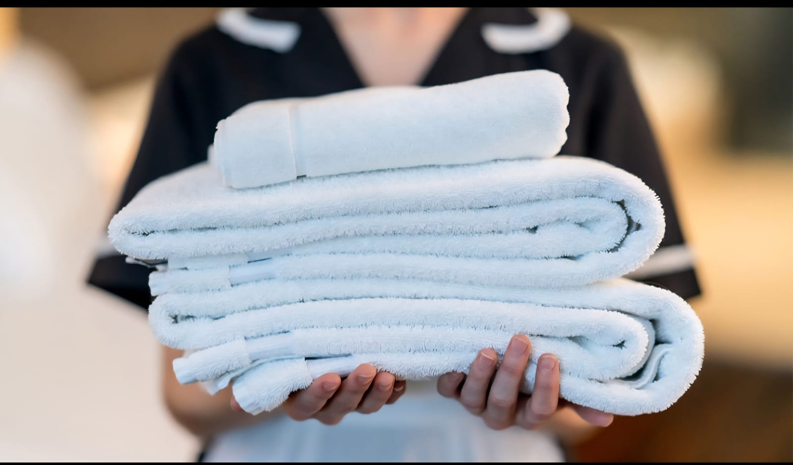
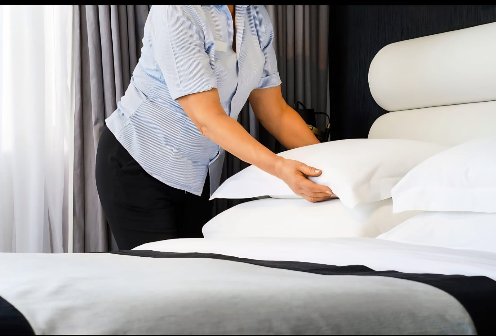
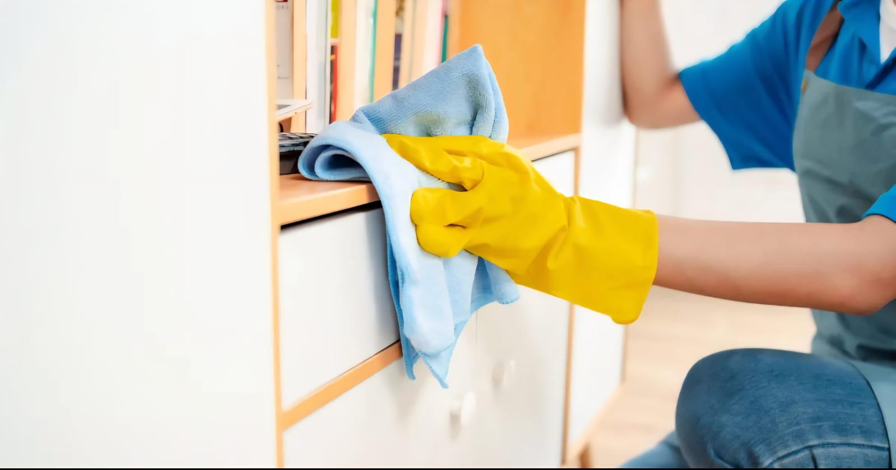
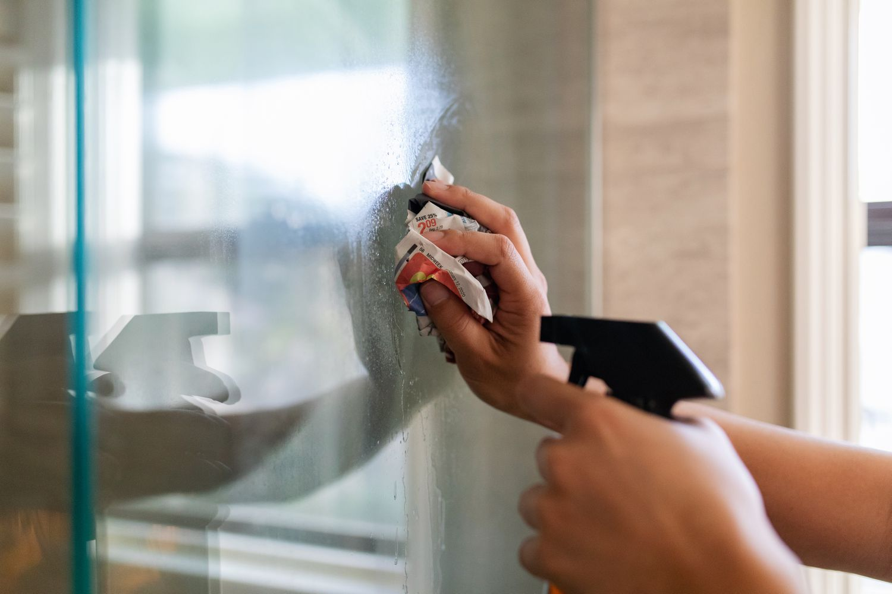
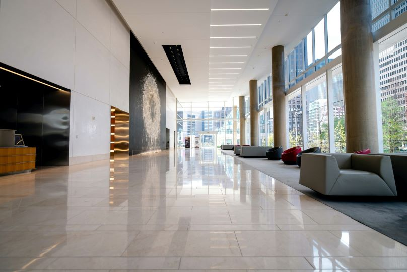
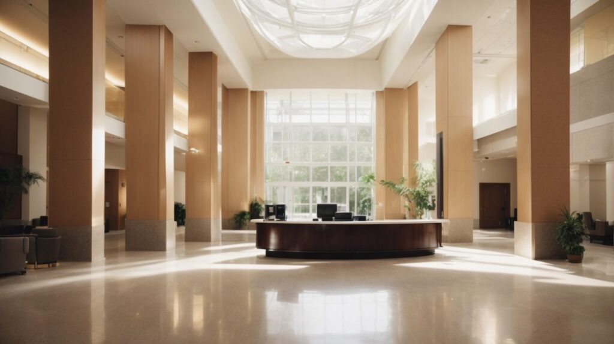
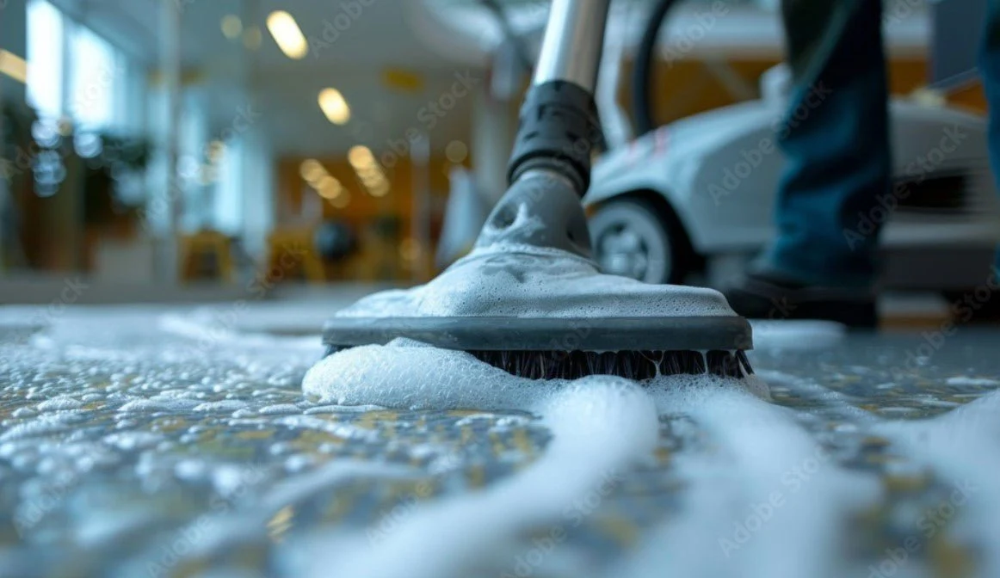
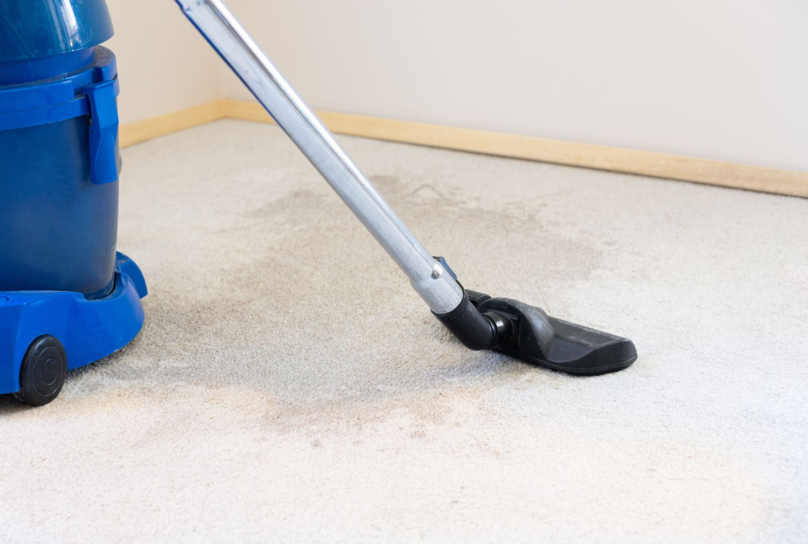

sauber, ehrlich, zuverlässig.”
Unsere Leistungen
🏢 Hotelservice
Professionelle Reinigung für Hotels und Gastgewerbe

Wir bieten professionelle und regelmäßige Reinigungsdienste für Hotels an – mit modernen Geräten und einem erfahrenen Team.
Unsere Mitarbeiter verfügen über umfassende Kenntnisse im Bereich der Hotelreinigung
Unser Team ist gut eingespielt, arbeitet regelmäßig in Hotels und weiß genau, was zu tun ist, um höchste Sauberkeit und Ordnung zu gewährleisten.
Es ist ein motiviertes und inspirierendes Team, das stets bestrebt ist, unseren Kunden den bestmöglichen Service zu bieten.

Wir passen unsere Leistungen flexibel an die Bedürfnisse und Vereinbarungen jedes Hotels an, um Qualität und Zufriedenheit auf höchstem Niveau sicherzustellen.
🧹 Unterhaltsreinigung
Regelmäßige Sauberkeit nach Ihrem Rhythmus
Wir bieten eine regelmäßige Reinigungsdienstleistung, die ganz nach Ihrem persönlichen Zeitplan organisiert wird – ob täglich, wöchentlich, zweiwöchentlich oder monatlich.

Sie können feste Termine im Voraus buchen oder flexible Reinigungsintervalle wählen, die genau zu Ihrem Alltag und Ihren Bedürfnissen passen.
Unser Ziel ist es, Ihnen den Alltag zu erleichtern. Deshalb passen wir uns vollkommen an Ihre Wünsche und Lebenssituation an – ob für Ihr Zuhause, Ihr Büro oder Ihre privaten Räume.
Sie entscheiden, wann und wie oft wir kommen, und wir kümmern uns zuverlässig um den Rest.
Auf Wunsch bieten wir auch eine dauerhafte, kontinuierliche Reinigung an, um sicherzustellen, dass Ihre Räume immer frisch, ordentlich und einladend bleiben.
Wir arbeiten mit System, Herz und Sorgfalt – damit Sie sich jederzeit in einer sauberen und angenehmen Umgebung wohlfühlen können.
🏠 Privatreinigung
Für ein Zuhause, das strahlt

Unser Privatreinigungsservice richtet sich ganz nach den individuellen Bedürfnissen, Gewohnheiten und dem persönlichen Stil jedes einzelnen Kunden – und geht dabei weit darüber hinaus.
Wir verstehen, dass jedes Zuhause einzigartig ist. Deshalb passen wir unsere Reinigungsmethoden und den Zeitplan genau an Ihre Wünsche an, damit alles perfekt zu Ihrem Alltag passt.
Unser engagiertes Team bietet sowohl regelmäßige als auch gründliche, tiefgehende Reinigungen an.
So bleibt Ihr Zuhause stets gepflegt, elegant und voller Frische – ganz gleich, ob es modern oder klassisch eingerichtet ist.
Dabei legen wir besonderen Wert auf Präzision, Freundlichkeit und Freude an der Arbeit. Wir reinigen Ihr Zuhause, als wäre es unser eigenes – mit Herz, Sorgfalt und echter Leidenschaft für Sauberkeit.
Und noch mehr: Sie können uns auch ganz einfach in das Zuhause Ihrer Eltern oder älteren Angehörigen schicken.
Wir kümmern uns dort mit größtem Respekt, Geduld und Herzlichkeit um die Reinigung – damit sich auch Ihre Liebsten in einer sauberen, angenehmen und liebevoll gepflegten Umgebung wohlfühlen können.

Dank unserer langjährigen Erfahrung und praktischen Kenntnisse wissen wir genau, wo sich Schmutz versteckt, den das Auge oft nicht wahrnimmt, der jedoch gesundheitliche oder ästhetische Probleme verursachen kann.
Wir kennen die kleinen Ecken, Ritzen und schwer zugänglichen Stellen, in denen sich Staub und Bakterien ansammeln – und beseitigen sie gründlich.
So schaffen wir nicht nur Sauberkeit, sondern auch ein gesünderes und angenehmeres Wohngefühl.
Wir wissen auch, dass nicht jeder die Zeit hat, sich regelmäßig um die Reinigung zu kümmern.
Genau deshalb übernehmen wir das für Sie – damit Sie Ihre Zeit genießen können, während wir uns zuverlässig um jedes Detail Ihres Hauses kümmern.
Zudem arbeiten wir mit höchster Sorgfalt, Diskretion und Achtsamkeit.
Wir wissen, dass jedes Zuhause persönliche und wertvolle Erinnerungsstücke enthält – Dinge von großem emotionalem oder symbolischem Wert.
Deshalb behandeln wir Ihre Gegenstände mit höchstem Respekt und gehen besonders vorsichtig mit allem um.
Unsere Arbeit erfolgt stets diskret und verantwortungsvoll – denn Ihre Privatsphäre und Ihr Vertrauen sind uns heilig.
Sauberkeit ist für uns nicht nur ein Service, sondern ein Versprechen, das wir Ihnen, Ihren Liebsten und Ihrem Zuhause geben – ein Versprechen für absolute Diskretion, Vertrauen und Respekt in jeder Handlung.
Bei uns können Sie sicher sein: Ihre Privatsphäre bleibt stets geschützt, und Ihr Zuhause ist in den besten Händen.
🪟 Glas und Fensterreinigung
Für klaren Durchblick und funkelnde Sauberkeit

Saubere Fenster und glänzende Glasflächen verleihen jedem Raum Leichtigkeit, Helligkeit und Eleganz.
Wir bieten eine professionelle Glas- und Fensterreinigung – innen und außen, sicher, diskret und zuverlässig.

Unser geschultes Team arbeitet mit größter Sorgfalt und verwendet hochwertige Reinigungsmittel sowie moderne Techniken, um auch empfindliche Oberflächen streifenfrei und makellos zu reinigen.
Wir wissen genau, wie Glas gereinigt werden muss, ohne Spuren an den Rändern, Ecken oder Rahmen zu hinterlassen – für ein gleichmäßig klares und glänzendes Ergebnis.
Unser Service umfasst sowohl große Glasfassaden und Schaufenster als auch kleinere Fensterflächen – stets mit höchster Präzision und Professionalität.
Selbst bei hohen oder schwer zugänglichen Glasflächen können Sie sich auf unsere Erfahrung und Sicherheit verlassen.
Wir verstehen, dass Glasfassaden oft das Gesicht eines Gebäudes sind.
Nach unserer Reinigung wirken selbst große Glasfronten ästhetischer, moderner und beeindruckender – sie reflektieren das Licht auf neue Weise und verleihen dem gesamten Gebäude ein frisches, edles Erscheinungsbild.
Nach unserer Reinigung glänzen Ihre Fenster klar und brillant – wie ein Diamant.
Wir arbeiten diskret, präzise und respektvoll mit Ihrem Eigentum – für Sauberkeit, die man sieht und spürt.
Wir reinigen nicht nur Glas – wir bringen Licht, Glanz und ein neues Gefühl von Eleganz in Ihre Umgebung.
🏢 Bau- und Grundreinigung
Für Neubauten, Renovierungen und alle Arten von Gebäuden

Unsere Bau- und Grundreinigung bietet eine umfassende Lösung für Mieter, Vermieter, Hausverwaltungen, Unternehmen und Eigentümer.
Wir reinigen Wohnhäuser, Bürogebäude, Anwaltskanzleien, Immobilienbüros, Geschäfte, Lagerhallen, Kellerräume und Gewerbeflächen – gründlich, professionell und zuverlässig.
Auch nach Bauarbeiten, Renovierungen oder Umbauten entfernen wir alle Baurückstände, Staub, Farbflecken, Gips, Kleber und Silikonreste, damit Ihr Objekt wieder sauber, geordnet und bezugsfertig ist.
Unser Team arbeitet mit Präzision, Erfahrung und Sorgfalt – für ein Ergebnis, das überzeugt.

Ob Büros, Anwaltskanzleien, Immobilienfirmen oder Geschäftsräume wie Metzgereien, Läden und Lagerflächen – wir kennen die spezifischen Anforderungen jedes Bereichs und passen unsere Reinigung entsprechend an.
Auch Treppenhäuser, Gemeinschaftsflächen, Gärten und Außenanlagen werden von uns gepflegt, sodass das gesamte Gebäude stets einen gepflegten, professionellen Eindruck vermittelt.

Nach jeder Grund- oder Bauendreinigung hinterlassen wir Ihre Räume so, als wären sie nie eine Baustelle gewesen – hell, frisch und hygienisch rein – bereit für die tägliche Nutzung oder geschäftliche Tätigkeit.
Unser Versprechen: Sichtbare Sauberkeit bis ins kleinste Detail und ein Ergebnis, das begeistert
🧽 Teppich- und Polsterreinigung
Für frische Teppiche und gepflegte Polster

Ihre Teppiche, Sofas und Polstermöbel sind täglich im Einsatz – sie sammeln Staub, Schmutz, Tierhaare und Gerüche, oft ohne dass man es merkt.
Mit unserer professionellen Teppich- und Polsterreinigung sorgen wir dafür, dass Ihre Textilien wieder sauber, hygienisch und angenehm frisch sind – wie neu gekauft.
Dank unserer Erfahrung und modernen Reinigungsgeräte reinigen wir Teppiche tiefenwirksam, entfernen Staub, Allergene und selbst tiefsitzende Verschmutzungen.
Unsere Spezialgeräte erreichen auch die tieferen Faserschichten, wo sich Schmutz und Milben gerne verstecken – für ein rundum sauberes Ergebnis.
Wir verwenden speziell abgestimmte Reinigungsmittel für verschiedene Materialien – egal ob Stoff, Leder, Leinen oder Mikrofaser – schonend, effektiv und mit angenehmem Duft, damit Ihr Zuhause nicht nur sauber aussieht, sondern auch frisch riecht.
Und keine Sorge, wenn Ihr Haustier gerne auf dem Sofa liegt – Tierhaare, Gerüche und Flecken sind für uns kein Problem!

Mit unseren Geräten und Methoden entfernen wir zuverlässig Haare, Flecken und Gerüche, die durch Haustiere entstehen – damit Sie und Ihr Liebling sich wieder wohlfühlen können.
Auch große Teppiche oder empfindliche Stücke behandeln wir mit größter Sorgfalt und speziellen Maschinen, die eine gründliche, aber schonende Reinigung ermöglichen.
Unser Ziel: Tiefenreine Sauberkeit, sichtbarer Glanz und ein frisches Raumgefühl, das begeistert.
🧴 Sonderreinigungen
Sonderreinigungen – Individuell, flexibel und ganz nach Ihrem Geschmack
Ob Garagen, Industrieflächen oder spezielle Oberflächen – wir finden die passende Lösung für jede Herausforderung.
Doch damit nicht genug: Wir bieten Ihnen eine Reinigung nach Ihrem persönlichen Stil und Wunsch.
Gemeinsam mit Ihnen gestalten wir den Ablauf, die Reinigungsmethoden und sogar die Reihenfolge der Arbeiten – ganz so, wie es zu Ihnen, Ihrem Alltag und Ihren Räumen passt.
Egal, ob es sich um Garagen, Industriehallen, Werkstätten, Lagerflächen oder private Spezialbereiche handelt – wir passen uns flexibel an Ihre Vorstellungen an.
Wenn Sie möchten, können Sie uns einfach über WhatsApp oder telefonisch kontaktieren, um alle Details zu besprechen – ganz individuell, so wie Sie es sich wünschen.
Wir kümmern uns um den Rest und sorgen dafür, dass alles sauber, ordentlich und perfekt auf Ihren Geschmack abgestimmt ist.
Unsere Sonderreinigungen sind so individuell wie unsere Kunden – maßgeschneidert, zuverlässig und mit Liebe zum Detail.
🌿 Umweltfreundliche Reinigung
Für Ihre Gesundheit und unsere Umwelt
Sauberkeit bedeutet für uns nicht nur Glanz, sondern auch Verantwortung.
Auf Wunsch verwenden wir umweltschonende und gesundheitlich unbedenkliche Reinigungsmittel, die sowohl für Privathaushalte als auch für Unternehmen, Büros und medizinische Praxen geeignet sind.
Durch unsere Erfahrung wissen wir genau, welche Produkte wirksam und zugleich schonend sind – damit Ihre Räume hygienisch sauber bleiben, ohne die Umwelt oder Ihre Gesundheit zu belasten.
Wir achten stets darauf, nachhaltige Methoden einzusetzen und Ressourcen zu schonen – denn eine saubere Umgebung beginnt mit einem bewussten Umgang mit der Natur.
Unsere umweltfreundliche Reinigung steht für: reine Luft, gesunde Räume und ein gutes Gefühl – für Sie, Ihre Familie, Ihre Mitarbeiter und die Zukunft.
Kontaktieren Sie uns gerne, um mehr über unsere umweltfreundlichen Reinigungsoptionen zu erfahren.
📞 Kontaktieren Sie uns
Haben Sie Fragen oder möchten Sie ein unverbindliches Angebot erhalten? Kontaktieren Sie uns – wir beraten Sie gerne persönlich und finden gemeinsam die passende Lösung für Ihr Objekt. Sauberkeit beginnt mit Vertrauen – und das beginnt mit einem Gespräch.📞 Kontakt
Wir freuen uns auf Ihre Nachricht! Für Fragen, Terminvereinbarungen oder Informationen zu unseren Dienstleistungen stehen wir Ihnen jederzeit freundlich, zuverlässig und mit Freude zur Verfügung.
📍 Adresse:
Ostendstr. 91, 86633 Neuburg a.d. Donau
📧 E-Mail:
info@reinheits-kristall.de
📞 Telefon:
+49 175 1234567
👤 Kontaktperson:
Younes Almasri
🌐 Unser Team spricht Deutsch und Arabisch Sie können uns gerne in der Sprache kontaktieren, die Ihnen am angenehmsten ist.
Wir sind stets bereit, Ihre Fragen zu beantworten und Sie zu unseren Reinigungsdiensten zu beraten mit Freundlichkeit, Transparenz und echter Freude an unserer Arbeit.
Über uns
Familienunternehmen
Wir sind ein aufstrebendes Familienunternehmen, das mit Leidenschaft, Engagement und stetigem Wachstum im Bereich der professionellen Reinigung tätig ist.
Unsere Erfahrung stammt aus jahrelanger Arbeit in renommierten Reinigungsunternehmen, insbesondere im Hotel- und Gebäudereinigungssektor.
Dort konnten wir wertvolle Kenntnisse über Qualitätsstandards, Präzision und Zuverlässigkeit sammeln – Werte, die wir heute in jedes unserer Projekte einbringen.
Wir verstehen die Bedürfnisse unserer Kunden, egal ob privat oder geschäftlich, und legen größten Wert auf Vertrauen, Diskretion und persönliche Betreuung.
Dank Ihrer Unterstützung wachsen wir stetig weiter und entwickeln unsere Dienstleistungen kontinuierlich, um stets das Beste für Sie zu erreichen.
Unsere Arbeit basiert auf Fairness, Transparenz und Respekt – denn Sauberkeit ist für uns mehr als eine Aufgabe: sie ist eine Verpflichtung gegenüber unseren Kunden und unserer Philosophie.